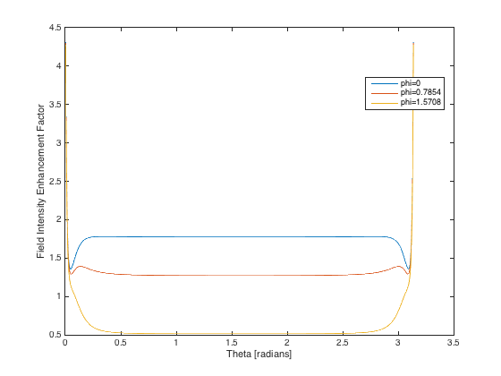
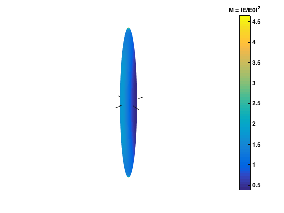

ScriptTutorial
This script provides a step-by-step tutorial to solve the scattering problem at a single wavelength, with explicit calls to the low-level functions used in the calculations of intermediate quantities. As such, this script provides a more in-depth understanding of the code than provided by the other example scripts. For a more application-oriented perspective, the "ScriptSolve" family of scripts use pre-defined functions performing the same steps internally, but invisible to the end-user.
Contents
Description
The example considers an absorbing dielectric (s=1.5+0.02i) in the shape of prolate spheroid of aspect ratio 10, and size parameter 10. The script calculate the T-matrix up to multipole order N and for all 0<=m<N From it various optical properties are also derived:
- Orientation-averaged extinction, scattering, and absorption cross-sections.
- Extinction, scattering, and absorption cross-sections for a given incident field (KxEz in this example, meaning incident along x and polarized along z)
- Surface fields (angular variation and surface-averaged intensity) for a given incident field (KxEz here)
Initialization
Note that you need to run InitPath in the root folder first to add required folders to the Matlab path so that functions can be called Alternatively, uncomment the following line
run('..\InitPath');
clear all close all fprintf('Initialization and finding NQ and NB...\n'); tic; % for timer
Initialization and finding NQ and NB...
Scatterer properties
The following parameters should be defined:
- a: semi-axis along x,y
- c: semi-axis along z
- k1: wavevector in embedding medium (of refractive index nM) (k1=2*pi*nM/lambda)
- s: relative refractive index (s=n_Particle / nM)
In addition, the following parameter will be needed if field expansion coefficients and/or the cross-sections for a given fixed orientation are sought:
- stIncPar: structure defining the incident excitation, can be obtained from calling vshMakeIncidentParameters
For actual field calculations (such as surface fields), we will also need
- nNbThetaPst: Number of theta's for postprocessing (must usually be larger than nNbTheta for accurate surface averaging)
- lambda: wavelength (in free space) [in the same unit as a, c, k1^{-1}]
- epsilon2: relative dielectric constant of scatterer (possibly complex)
- epsilon1: relative dielectric constant of embedding medium (real positive) Note that the latter three are not independent if k1 and s have been set
Parameters of the scattering problem
We define parameters for a prolate spheroid

h = 10; % aspect ratio, h=c/a for prolate spheroids k1 = 1; % incident wavenumber k1=2pi/lambda * nM xmax = 10; % maximumum size parameter xmax= k1 * max(a,c) % From which we deduce c = xmax / k1; a = c / h; epsilon2 = (1.5+0.02i)^2; % dielectric constant of scatterer epsilon1 = 1; lambda = 2*pi*sqrt(epsilon1)/k1; s = sqrt(epsilon2)/sqrt(epsilon1); % note that only s is needed for T-matrix but other parameters are needed for E-field calculations % For convenience, k1 and s are stored in a struct stk1s.k1=k1; stk1s.s=s; % Incident field properties (if required) sIncType='KxEz'; % incident along x and polarized along z % type help vshMakeIncidentParameters for more options (plane wave excitation only)
Parameters governing convergence
The following parameters will be needed:
- N: Number of multipoles required for T-matrix
- abmvec: Vector containing the values of m for which T is computed Only m>=0 is needed and m<=N. For all m, use absmvec=0:N (= [0,1,2 ..., N] )
- NQ: Number of multipoles for the P and Q matrix, NQ>=N
- NB: Number of multipoles to compute the Bessel functions in the improved algorithm, NB>=NQ.
- nNbTheta: Number of theta's for the Gaussian quadrature
% Maximum multipole order for T-matrix and series expansions of fields N = 50; % m-numbers used in the calculations % For most incident excitations and for orientation-averaged properties, % all |m|<=N need to be considered: absmvec = (0:1:N)'; % Advanced users can define the stIncPar first and use the following instead % absmvec = stIncPar.absmvec.'; % or specify a single m-value for testing for example, i.e. % absmvec = 1; % m=1 only % Number of points for Gaussian quadratures to compute integrals in P and Q matrices % By symmetry, points are only computed from that=0 to pi/2 nNbTheta = 120; % Make structure describing spheroidal geometry and quadrature points for % numerical integrations stGeometry = sphMakeGeometry(nNbTheta, a, c); % Make structure with incident field parameters stIncPar = vshMakeIncidentParameters(sIncType, N);
Defining number of multipoles for each step
The T-matrix and corresponding field expansion coefficients will be calculated up to n=N for all m in absmvec (note that m>=0).
% For this, we may need to calculate P and Q with more multipole, % NQ=N+Delta [see JQSRT 160, 29 (2015)]. % This can ensure the accuracy of the entire T-matrix [see JQSRT 160, 29 (2015)]. % Delta can be estimated from the convergence of T_{11}^{22,m=1} % with the following call (advanced users) [Delta, T2211err]= sphEstimateDelta(stGeometry, stk1s); % Alternatively one may simply use NQ = N and check convergence of the % results by running a second calculation for a larger N % [see JQSRT 160, 29 (2015)]. % Delta=0; NQ = N+Delta;% NQ>=N: Maximum multipole order for computing P and Q matrices % P and Q are calculated using the stable and accurate algorithm in % [JQSRT 123, 153 (2013)]. % For this algorithm we need to specify how many extra order are needed % to compute Bessel function products to the highest accuracy % This can be estimated with the following function NB=sphEstimateNB(NQ, stGeometry, stk1s); % or can be specified by user (advanced), for example % NB=NQ; fprintf('\n ... done in %.g seconds.\n', toc);
sphCalculatePQ: Calculating P,Q for 1 m-values with N_Q = 80, N_B = 80, N_Theta = 120 ... done in 3 seconds.
Calculation of the T-matrix
Calculating P and Q
fprintf('\nMain business...\n'); tic; % This calculates P and Q using the algorithm of [JQSRT 123, 153 (2013)] CstPQa = sphCalculatePQ(NQ, absmvec, stGeometry, stk1s, NB); % CstPQa is a cell {1 x M} of structures, one for each m in absmvec. Each stPQa structure % contains structures describing P (st4MPeo, st4MPoe) and Q (st4MQeo, % st4MQoe). These make use of the reflection symmetry and do not contain % the zero elements. % To obtain the full matrices in standard form, use the following call % jj=2; % jj=1 corresponds to m=0, jj=2 to m=1, etc... (see absmvec definition) jj = 1; [Pm, nvecP] = rvhGetFullMatrix(CstPQa{jj},'st4MP'); [Qm, nvecQ] = rvhGetFullMatrix(CstPQa{jj},'st4MQ'); fprintf('Pm and Qm are full matrices for m=%d\n', absmvec(jj)); % nvec contains the multipole orders for each block of Pm and Qm % Note that P and Q are square matrices of dimension NQ+1-m (or NQ for m=0) % since only elements P_{nk} with n,k>=m (or 1 for m=0) are needed. % Therefore for a given m, P(i,j) correspond to P_{n=i+m-1,k=j+m-1} % or P_{n=i+m,k=j+m} for m=0 fprintf('P and Q matrices... done in %.g seconds.\n', toc); % Calculating T and R % tic; % Get T=-PQ^{-1} and R=Q^{-1} for all m using the inversion procedures % described in [JQSRT 123, 153 (2013)]. CstTRa = rvhGetTRfromPQ(CstPQa,true); % CstTRa has the same format as CstPQa and contains T and R matrices for % all m in absmvec % These T and R matrices go up to NQ multipoles % If only the T-matrix is required, use instead % CstTRa = rvhGetTRfromPQ(CstPQa,false); % If needed, discard higher order multipoles % (which are affected by the finite size of P and Q) if NQ>N CstTRa = rvhTruncateMatrices(CstTRa, N); end % T and R matrices now include N multipoles % If required, one may symmetrize the T-matrix (this assumes that the upper % triangular parts of the matrices are correct, see JQSRT 160, 29 (2015)) CstTRa = rvhGetSymmetricMat(CstTRa, {'st4MT'}); fprintf('\nT-matrix (N = %d) ... done in %.g seconds.\n', N, toc); % Calculate the (Ext, Abs, Sca) orientation-averaged cross-sections stCoa = rvhGetAverageCrossSections(k1, CstTRa); fprintf('\nCross sections for orientation-averaged excitation:\n'); fprintf('<Cext> = %.20g\n', stCoa.Cext); fprintf('<Csca> = %.20g\n', stCoa.Csca); fprintf('<Cabs> = %.20g\n', stCoa.Cabs);
Main business... sphCalculatePQ: Calculating P,Q for 51 m-values with N_Q = 83, N_B = 83, N_Theta = 120 Pm and Qm are full matrices for m=0 P and Q matrices... done in 6 seconds. T-matrix (N = 50) ... done in 0.3 seconds. Cross sections for orientation-averaged excitation: <Cext> = 18.737732166309676529 <Csca> = 16.601204532914721312 <Cabs> = 2.1365276333949552168
Further post-processing for well-defined orientation
fprintf('\nComputing fixed orientation...\n\n'); tic; % For this section, it is assumed that the incident field properties are % defined in stIncPar % Get the field expansion coefficients from T and R for a given incident % excitation (defined earlier in stIncPar) stAbcdnm = rvhGetFieldCoefficients(N, CstTRa, stIncPar); % Calculate the (Ext, Abs, Sca) cross-sections for this excitation stC = pstGetCrossSections(k1, stAbcdnm); format long fprintf('\nCross sections for fixed excitation (%s):\n', sIncType); fprintf('Cext = %.20g\n', stC.Cext); fprintf('Csca = %.20g\n', stC.Csca); fprintf('Cabs = %.20g\n', stC.Cabs); % For convenience this will prepare a result structure for postprocessing stResE=pstMakeStructForField(stAbcdnm, N, lambda, epsilon2, epsilon1, stIncPar, a, c); % For surface-properties, we may want to use more points to ensure finer % evaluation of the surface fields and of their averages nNbThetaPst = 360; % number of theta for evaluating fields % The surface fields can be caculated as % stEsurf=pstSurfaceField(stResE,nNbThetaPst); % To avoid repeated calculation of the geometry, one may also do it % separately like so: stRtfuncPst = sphMakeGeometry(nNbThetaPst, a, c); % new geometry with more points % It is also necessary to extend the range of theta over [0;pi] instead of % [0;pi/2] stRtfuncPst=rvhGetThetasForAverage(stRtfuncPst); % get thetas over entire range [0,pi] % Calculate the surface electric field E partial series expansion (for each m) % on the surface as well as average values M=|E|^2, F=|E|^4 stEsurf=pstSurfaceField(stResE,stRtfuncPst);
Computing fixed orientation... Cross sections for fixed excitation (KxEz): Cext = 25.506059713694384072 Csca = 23.011763940346192214 Cabs = 2.4942957733481918581
Plots of the surface field
as a function of theta, for one or more values of phi
phi0=[0,pi/4,pi/2]; M = pstGetThetaDepFieldIntensity(stEsurf,phi0); % [3 x T] figure('Name','Theta-dependence of surface-field intensity M=|E|^2 for fixed phi'); plot(stEsurf.theta, M); legend({['phi=', num2str(phi0(1))], ... ['phi=', num2str(phi0(2))], ... ['phi=', num2str(phi0(3))]}, ... 'Location', 'Best'); xlabel('Theta [radians]') ylabel('Field Intensity Enhancement Factor') % 3D surface plot of the surface % field everywhere on the surface % NOTE that this requires to recompute all % the surface fields from scratch. Using 90x90 pts here: pstPlotAllSurfaceField(90,stResE); fprintf('\nPostprocessing for fixed orientation (Ntheta = %d) over [0;pi] ... done in %.g seconds.\n', ... 2*nNbThetaPst, toc);
Postprocessing for fixed orientation (Ntheta = 720) over [0;pi] ... done in 3 seconds. 